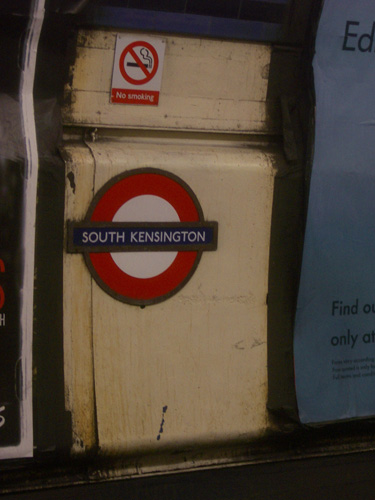

<
>
underground
[
2007-02-06
23:17
]

something about this grimy corner held my attention - waiting for the train to come -
take me - take me - look - i've been photoshopped
- such redness blueness blackness - saturated grainy world